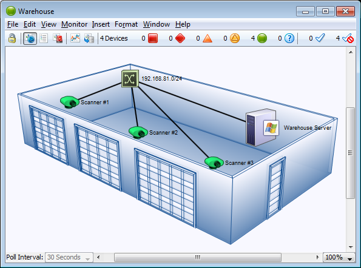

You can place a background image on a map so that it appears behind the devices, icons, and links on the map. All image file formats supported for custom icons can be used.
The figure below shows a map after placing an image in the background.
To place a background image in your map:
or

Map with background image.
The background image retains its height and width, and is not scaled (stretched or shrunk) when you resize the window. If the background image is smaller than the current window size, the image will be centered in the map, and the map's background color will show around the edges. If a large image is placed, its dimensions determine the full size of the window.
Contrasty images may make it difficult to see the devices and links against the background. To make the image more suitable as a background image, you may use a graphics program to increase the brightness and/or decrease its contrast before placing it in a map. We regularly use GraphicConverter, an inexpensive shareware graphics program from http://www.lemkesoft.com, to do this task. It has a Brightness/Contrast adjustment facility to simplify this task.
Large images consume large amounts of memory and slow InterMapper's redrawing of the window, especially when viewed over a remote connection. You should balance the image quality against the size of the map. Larger maps may look better, but they may consume large amounts of memory.
Note: Use of a compressed image file format such as JPG does not necessarily translate into less memory use.
Decreasing contrast can decrease the size of an image, so that decreasing the contrast as described above may help decrease the size of the background image as well. Use compressed formats, such as JPG and GIF, to further decrease the overall size of the image file.